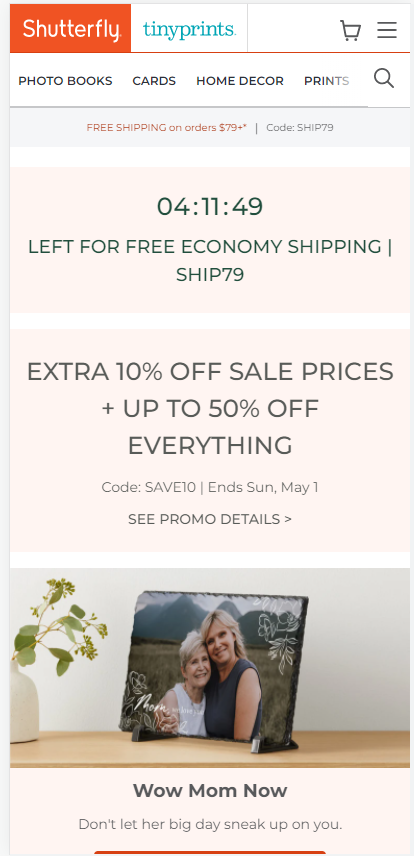
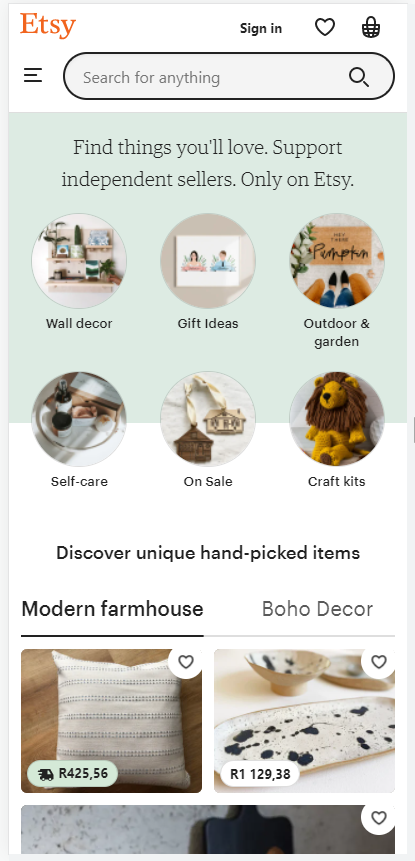
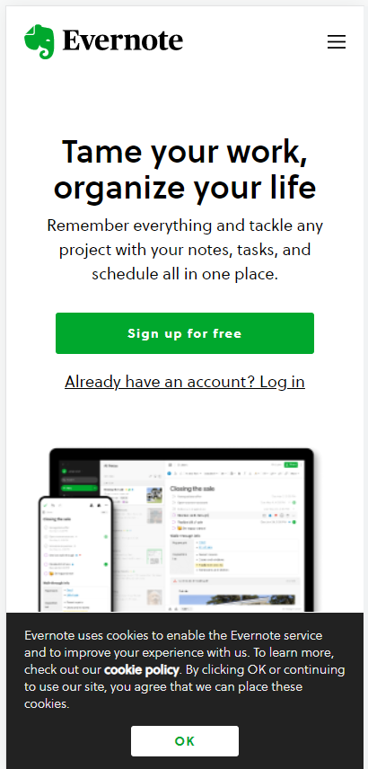

White Space and Clean Design
Shutterfly

On this website the basic role of white space is to let your design breathe by reducing the amount of text and functional elements that users see at once.
This is shown on this website.Whitespace not only creates harmony, balance, and helps to brand a design, it lead from one element
to another.
This websites main goals are to make the website look simple and uncluttered and to deliver information that the readers will enjoy and appreciate.
Contrast
Etsy

In this website, using contrast in a balanced way ensures that the design is interesting. Remember that the contrast definition in graphic design
indicates it is meant to communicate a message or inspire the viewer to respond to a call to action which this website does great at.
Contrast can be created using color, size, shape, and typography which shows clearly in this website.
Repetition
Evernote

In this website repetition was used, repetition is the act of repeating the same or similar design elements and making them come together as a cohesive whole.
This repetition can be done by repeating the same design elements in the design of the website, like colors, fonts, lines, shapes, sizes, and texture, among others
which is all present in this website.